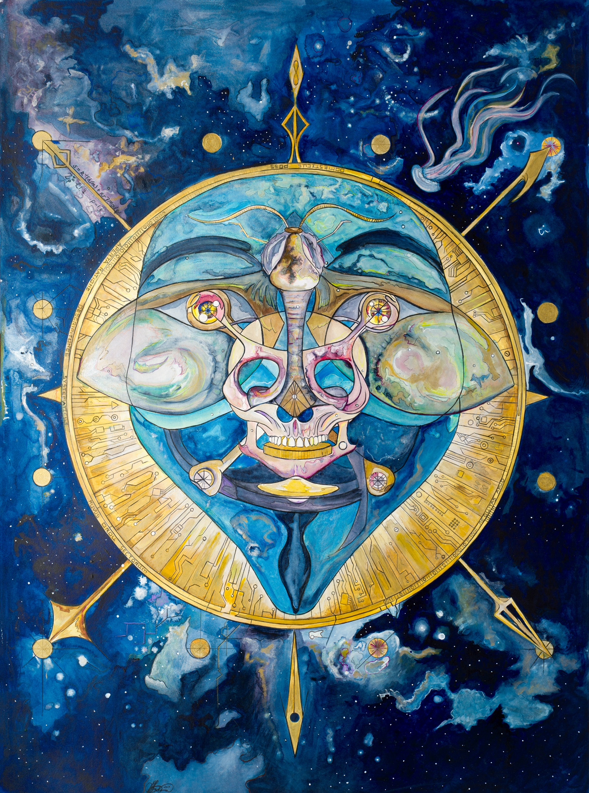
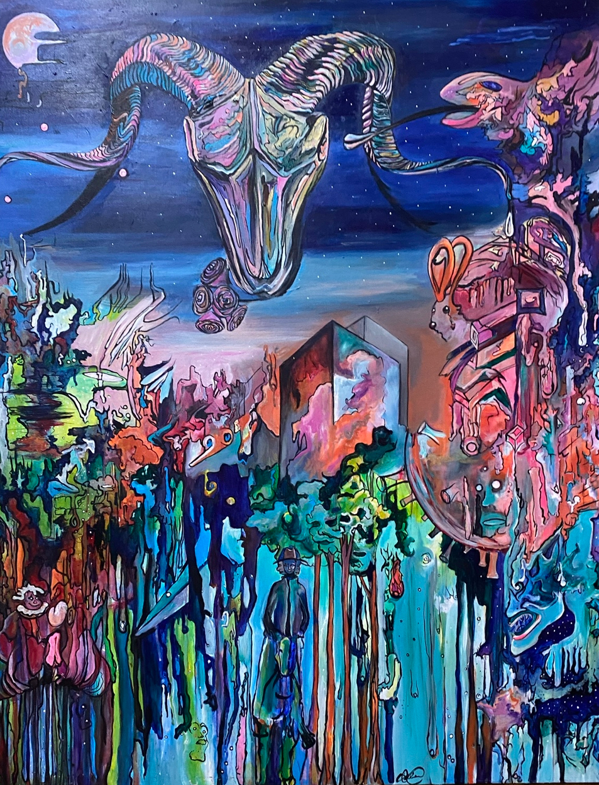
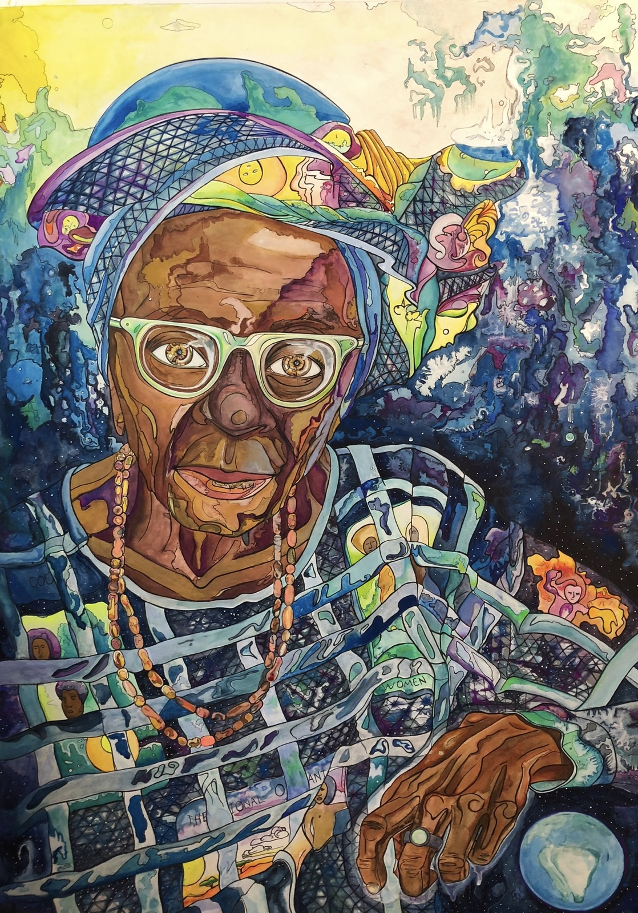
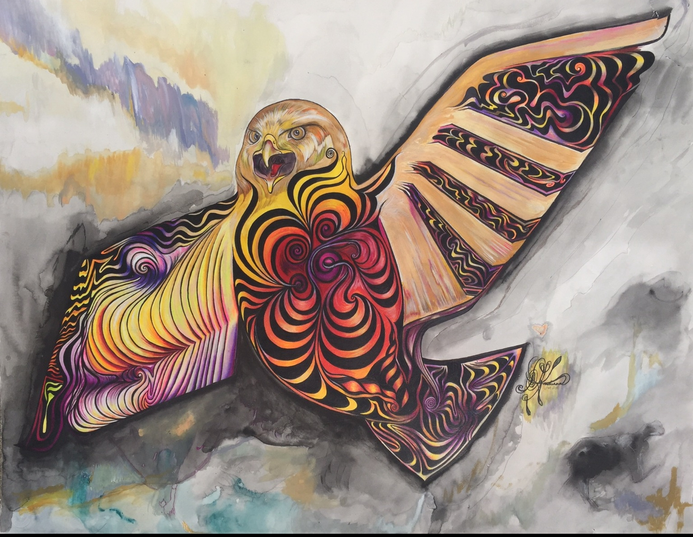

Forever Flying Bird was a Chippewa elder, of the greater lakes area, that held was a deeply revered by the tribes. He would travel from tribe to tribe sharing a message of peace and love.
inspiriing the tribes to work together for the greater good, utilizing conflict resolution and teaching the youth through storytelling. His stories were his trademark as
he would teach the children in front of the campfires illuminating this ancient and wise face. He was known to be hundresds of years old. Many chieftians are documented reporting
knowing him and their grandfathers and their grandfathers knew him. Many believed he possesed the fountain of youth, enabling him to teach generation after generation. He was also
know as John Smith and did plays and participated in theatre in American plays entertaining entertaining until his age of 137 when he passed in 1915. His legend is an example
of how powerful a peaceful and loving elder is on morphing a people.
Dragon at Solitude is a stained glass window into the magic inside the human heart. Opening a channel into the dream state imagination is an incantation for manifestation. The dragon is a
keeper of treasures and secrets. A mythical creature that is ubiquitious across millennia and global cultures.The dragon is a allegorical representation of the human imagination. A window into
a universal desire to discover the unknown.
Bear Hunter was a chief of the Shoeshone of Southern Idaho and Northern Utah. His people were assulted for their land. His people were naturally
peaceful and had been hunted and brought to the brink of non existance. Chief Bear Hunter was know for his passionate love of his people and the land.
His story was hidden from the history books and his legacy buried. The truth of the martyers of the Bear River Massacare have recently been brought to light.
One day his people will be returned to their land and the world will know their suffering.

Bitcoin

My vanlife in 2020, my Corona.

A queen of human rights Nigerian princess.

The heart of nature has a soul. Fighting for survival each species has a sacred place on planet Earth.